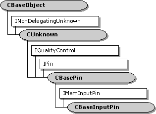

description: The CBaseInputPin class is an abstract base class for implementing input pins. This class adds support for the IMemInputPin interface, in addition to the IPin interface support provided by CBasePin. ms.assetid: 5a2b7f09-8c8b-45da-a4b7-afeb8d5548c1 title: CBaseInputPin class (Amfilter.h) ms.topic: reference ms.date: 4/26/2023 topic_type:
[The feature associated with this page, DirectShow, is a legacy feature. It has been superseded by MediaPlayer, IMFMediaEngine, and Audio/Video Capture in Media Foundation. Those features have been optimized for Windows 10 and Windows 11. Microsoft strongly recommends that new code use MediaPlayer, IMFMediaEngine and Audio/Video Capture in Media Foundation instead of DirectShow, when possible. Microsoft suggests that existing code that uses the legacy APIs be rewritten to use the new APIs if possible.]

The CBaseInputPin class is an abstract base class for implementing input pins. This class adds support for the IMemInputPin interface, in addition to the IPin interface support provided by CBasePin.
To use this class, derive a new class and override at least the following methods:
Depending on the function of the pin, you might need to override additional methods in CBaseInputPin or CBasePin.
| Protected Member Variables | Description |
|---|---|
| m_pAllocator | Pointer to the memory allocator. |
| m_bReadOnly | Flag that indicates whether the allocator produces read-only media samples. |
| m_bFlushing | Flag that indicates whether the pin is currently flushing. |
| m_SampleProps | Properties of the most recent sample. |
| Public Methods | Description |
| CBaseInputPin | Constructor method. |
| ~CBaseInputPin | Destructor method. |
| BreakConnect | Releases the pin from a connection. |
| IsReadOnly | Queries whether the allocator uses read-only media samples. |
| IsFlushing | Queries whether the filter is currently flushing. |
| CheckStreaming | Determines whether the pin can accept samples. Virtual. |
| PassNotify | Passes a quality-control message to the appropriate object. |
| Inactive | Notifies the pin that the filter is no longer active. Virtual. |
| SampleProps | Retrieves the properties of the most recent sample. |
| IPin Methods | Description |
| BeginFlush | Begins a flush operation. |
| EndFlush | Ends a flush operation. |
| IMemInputPin Methods | Description |
| GetAllocator | Retrieves the memory allocator proposed by this pin. |
| NotifyAllocator | Specifies an allocator for the connection. |
| GetAllocatorRequirements | Retrieves the allocator properties requested by the input pin. |
| Receive | Receives the next media sample in the stream. |
| ReceiveMultiple | Receives multiple samples in the stream. |
| ReceiveCanBlock | Determines whether calls to the CBaseInputPin::Receive method might block. |
| IQualityControl Methods | Description |
| Notify | Receives a quality-control message. |
| Requirement | Value |
|---|---|
| Header | Amfilter.h (include Streams.h) |
| Library | Strmbase.lib (retail builds); Strmbasd.lib (debug builds) |